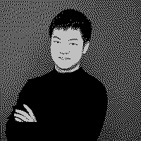

SC-BIOS (C) 2026 Release 26.11
Memory Test : 640K OK
Detecting degrees ...
BA : OXFORD 2021-2024 OK
MSC: ETH-ZURICH 2024-2026 OK
Starting SC-DOS...
C:\SITONG>TYPE README.TXT
SITONG.PCX

SITONG CHEN陈思同
Hello there!
I'm a research assistant at the Computational Robotics Lab (CRL), ETH Zürich, working with Prof. Stelian Coros. I did my MSc in Robotics, Systems and Control at ETH Zürich and my BA in Engineering Science at the University of Oxford.
- research
I work on humanoid robots that understand a task and move their whole body to do it. My work connects vision-language-model planning with reinforcement-learning whole-body control through motion keyframes. I'm also interested in model predictive control, motion planning and learning from human motion.
C:\SITONG>TYPE NEWS.TXT
2026-09PAPERKINO is out on arXiv: VLM planning meets whole-body control through keyframes.
2026-08STARTStarted as a research assistant at the Computational Robotics Lab (CRL), ETH Zürich.
2025-10STARTStarted my master's thesis on keyframe control for humanoid loco-manipulation at the Computational Robotics Lab (CRL) with Prof. Stelian Coros.
2025-04PROJECTStarted working on ADMM-based distributed MPC for modular aerial robots at ETH.
2025-03LABJoined the Robotic Systems Lab (Prof. Marco Hutter) to work on coverage planning for legged robots.
2024-09STARTStarted my MSc in Robotics, Systems and Control at ETH Zürich.
2024-09AWARDGraduated from Oxford with First Class Honours and received the College Examination Prize.
2023-03AWARDReceived the EUROP Award at Oxford, one of 20 students out of 350.
C:\SITONG>DIR PUBLICATIONS
01
KINO: A Keyframe Interface for VLM Planning and Whole-Body Control in Humanoid Loco-Manipulation
Sitong Chen, Fatemeh Zargarbashi, Jin Cheng, Tianxu An, Stelian Coros
arXiv preprint, 2026
Humanoid loco-manipulation requires robots to interpret task instructions and scene semantics while executing coordinated whole-body motions. We propose a hierarchical framework that uses motion keyframes as an intermediate representation between Vision-Language Model (VLM) planning and Reinforcement Learning (RL) control. Each keyframe specifies a target whole-body robot pose and, when applicable, an object pose. Given a language instruction, scene observations, and execution feedback, the VLM selects successive task-relevant keyframes from a predefined library. The selected keyframes are retargeted to the current scene to account for object poses and dimensions. A keyframe-conditioned whole-body policy then generates joint-level actions to reach these goals. We introduce a saliency-based keyframe sampling strategy for low-level policy training that improves end-to-end task success rate from 44% to 92% when using sparse VLM keyframes. We evaluate our framework on object pickup, transport, and placement tasks in simulation and on a Unitree G1 humanoid. The system successfully performs both one- and two-handed manipulation and generalises to placement locations beyond the training reference data.
C:\SITONG>DIR PROJECTS
2025 · ETH
Distributed MPC for modular aerial robots · ADMM-based, with parallel module computation and rigid-connection constraints
2025 · ETH RSL
Coverage planning in multi-storey buildings · for legged robots inspecting construction sites
2024 · ETH SRL
Bionic robotic hand with haptic feedback · tendon-driven, 17 DoF, teleoperation and imitation learning on a Franka arm
2024 · Oxford
Scenario-based MPC and safety filters · multi-agent quadrotors and a Husarion robot
2024 · Oxford
Autonomous home-cleaning robot · navigation, grasping, deep Q-learning and movement primitives
2023 · Oxford
Core body temperature from heart rate · extended Kalman filter, with Equivital
2022 · Oxford
Chess-playing robot arm · ROS, MoveIt, YOLO and AprilTags, 15-person team
Type HELP and press Enter.